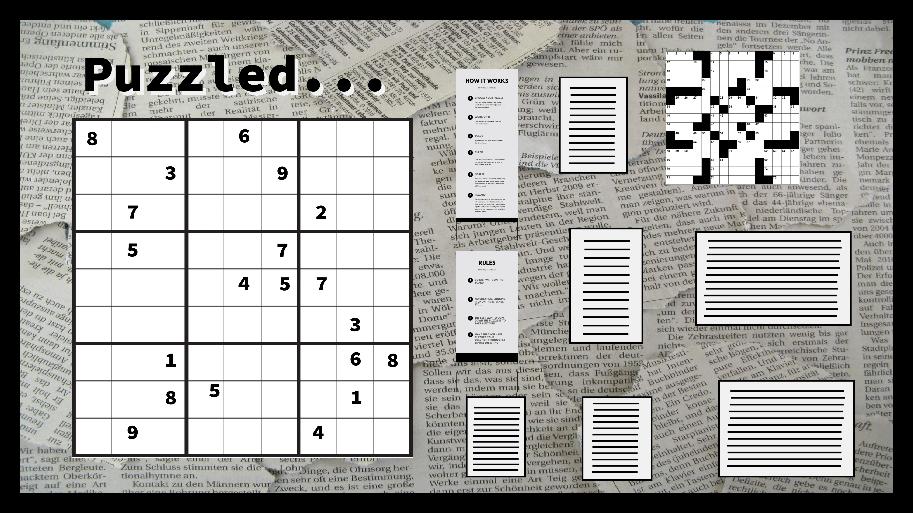
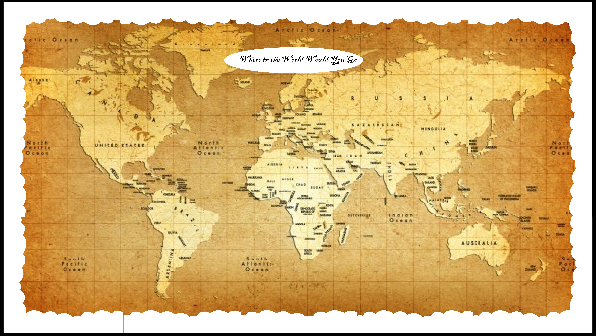
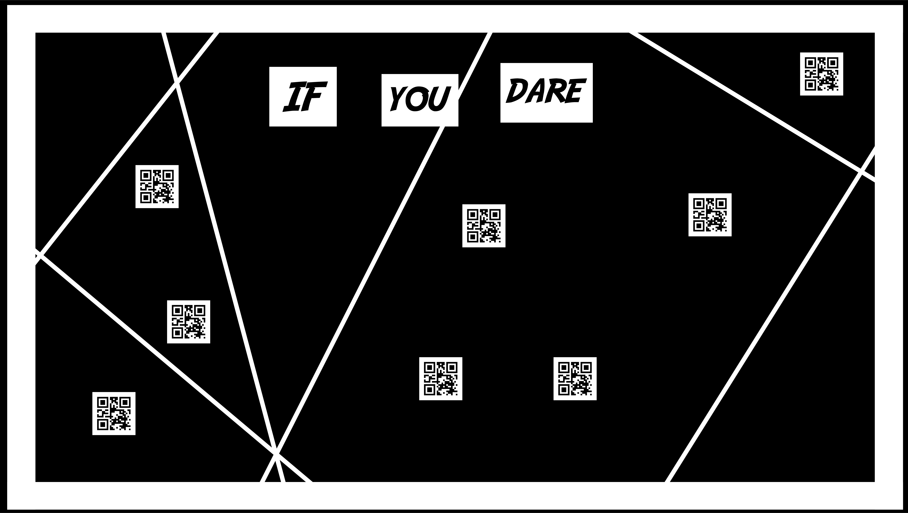
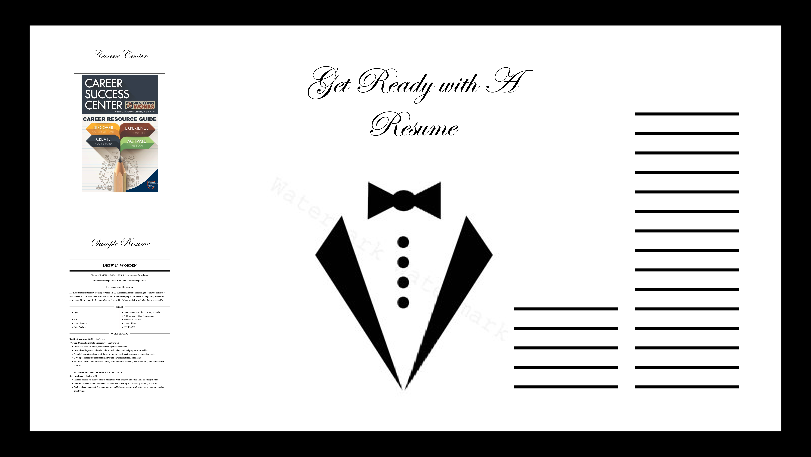

RA Portfolio 2019-2020
Welcome to the portfolio of all the work I did as an RA during the 2019-2020 academic year at Western Connecticut State University. This portfolio is broken up into five sections, cover letter, resume, door tags, bulletin boards, and programs. Click this link to download a complete repository of the portfolio that includes actual images, instead of just the digital files.


Door Tags
#1

This was my first door tag, so they were put up in the hall before I could get input on what residents were interested in. They were a little generic but they seemed to be accepted and enjoyed. Residents that have moved rooms over the academic year have taken them as they moved to other parts of the building and now live on their new doors. I take this as a sign that they liked them.
#2

I got the idea for this door tag while doing HFS inspections. A few of my residents had soduko and crossword puzzles laying out on their desks, so I decided to theme my board and door tags off of that. They where well recieved and a few residents liked them so much that they took the effort to knock on my door and tell me.
#3

This door tag was meant to be similar in theme to the bulletin board for the month. The board was a world map with pointers where residents could take a pointer and point to a location they wanted to visit around the world. The logo for Google Maps seemed appropriate.
#4

This is the door tag that I and my residents liked the best. I wanted a Matrix-esque theme to the month's board and door tags and I decided to approach it through QR codes. Each individual resident had a different QR code that, when scanned, would display there name.
#5

As is a common trend among all my door tags, this door tag was meant to be thematically similar to my current bulletin board on resumes and resume building. The bulletin board had a siloutte of a suit jacket and a tie, so the bow-tie door tags tied the hall together nicely.
Bulletin Boards
#1
This was my first board and I designed it to go along with my first set of door tags. I wanted something welcoming, as it was during the first month of classes, but also to be educational and give out some handy advice along with some general good practices for college.
#2
I think this is my favorite board. The key purpose I had for this board while brainstorming is that I wanted it to be very interactive. The board is comprised of many puzzles including a scavenger hunt, a custom sudoku that I made, a few logic-based riddles, and a crossword. The residents of my section loved this board and some of them solved some of the puzzles. Other residents around the building also joined in the scaveger hunt and won the custom door tag prize.
#3
This was around the time of thanksgiving break in the fall, and many residents where traveling for the holiday. I wanted to make a simple board, where residents could pick a place to go, if money was no object. By the time I took it down, it was filled with markers of places people wanted to go.
#4
This was my first board of the first semester and I wanted to introduce a little spontaneity. So I made QR codes for cool and bizarre things on the internet and posted them on my board in a hacker-themed way. Some of the QR codes included good books and movies, interesting facts, cool Youtube videos and the like. I recieved suggestions from residents, and added more QR codes as time went on.
#5
The main reason for this board is because it was around the time that RA applications came out, but a lot of my residents where telling me about different jobs they were applying to for the summer. Having the same experience my freshman year, I wanted to share some tips about creating a resume and what has worked best for me, along with some promo for the Career Center.
Programs
#1

This was my first program. It was a simple movie night to start the year off. We watched the newly releases Avengers: Endgame and has popcorn and snacks. This program was probably one of my best attended and the residents kept asking throughout the semester if I would do something like it again.
#2

For my second program, I did cultural trivia game, but with flags and coloring. I had index cards that had trivia on them, and when the residents figured out the country the trivia belonged to, they would draw the flag of that country on the back of the index card. By the end I had a giant poster board of flags and I hung it in my hall. There was also pizza and snacks. This program was also really well attended and since it was held in the lobby of the building, I got many residents from outside my section to come.
#3

This program was an iMatter program where residents could come and learn some basic coding skills and code rock, paper, scissors. However nobody showed up for this program. This suprised me because I knew of at least 8 people in my section who were enterested and 5 more throughout the building who also were. I held a poll beforehand to make sure.
#4

This was my first collaboration program with RA K.C. and Alejandro. We had a mock game show in the lobby of Litchfield Hall in the format of the TV show, Are You Smarter Than a Fith Grader. This program was reasonably well attended considering it was on a weekend. This was in reasponse to some feedback I had gotten about by previous trivia-based program.
#5

This program was intended to be a semester long program with meeting times every week. Litchfield Hall, being a freshman hall, has many students who are taking MAT 100 and MAT 100P. I wanted to provide an in-hall outlet for those residents to get some help. This program did very well and I had residents stopping for not just help in math, but also in computer science, astronomy, and physics.